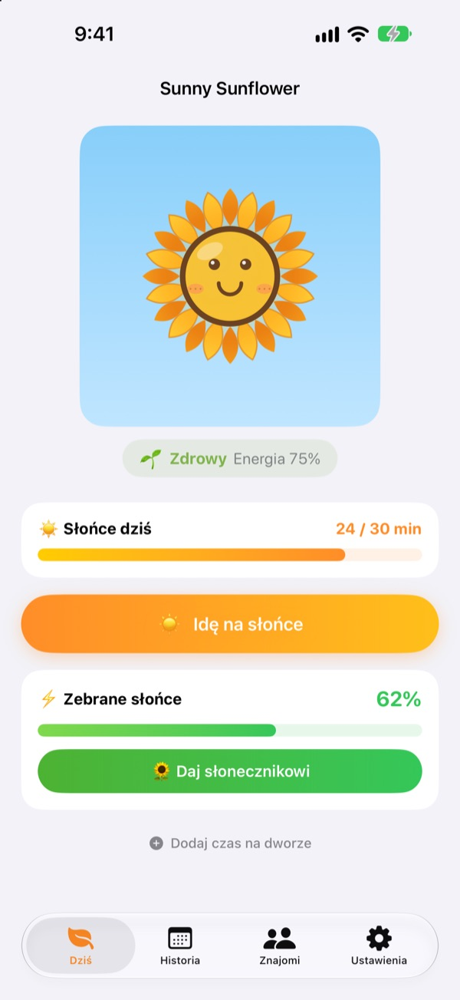
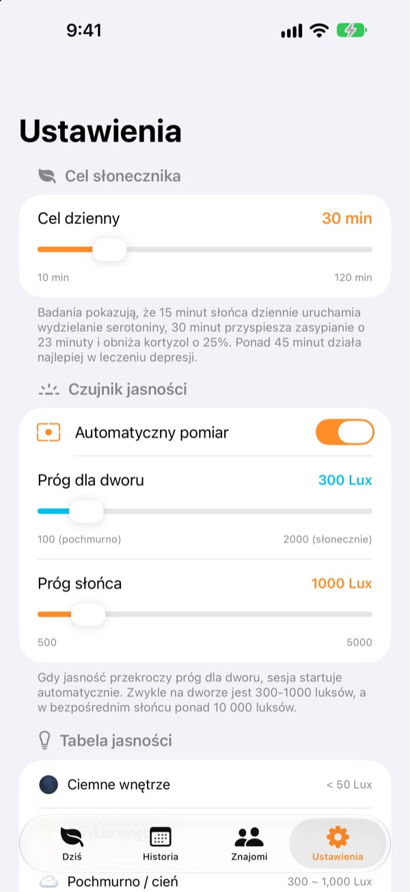
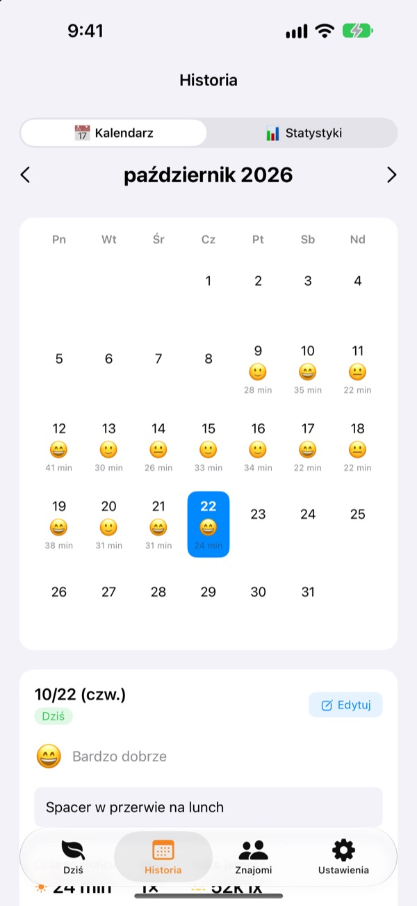
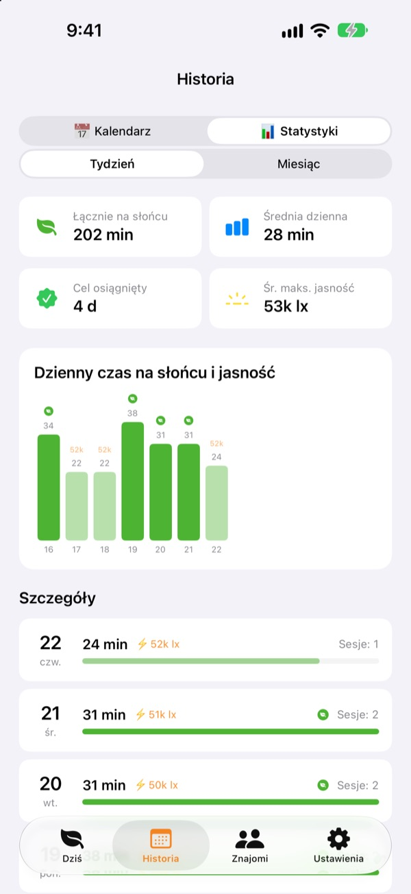

Dzisiejsze słońce
karmi Twój słonecznik
Wystarczy wyjść na dwór, a czas na słońcu nalicza się sam. Oddaj zebrane słońce słonecznikowi, a będzie kwitł. Zapomnisz o nim na kilka dni, a zacznie więdnąć.
Wszystkie funkcje są bezpłatne. Dane zostają na urządzeniu.

Zbierz trochę słońca
Wybierz, jak jest jasno i jak długo, złap słońce i oddaj je słonecznikowi, który już zaczyna zwieszać głowę.
Ile minut słońca złapałeś dzisiaj?
Kilka kroków do pracy, szybkie wyjście po lunch. Kiedy cały dzień siedzisz w środku, dopiero wieczorem orientujesz się, że prawie nie widziałeś dziennego światła. Sunny Sunflower pokazuje Twój czas na dworze w liczbach, a słonecznik czeka na jutrzejszy spacer.
Wyjdź, a zmierzy sam
Stuknij Idę na słońce i wyjdź na dwór. Aplikacja szacuje jasność wokół Ciebie na podstawie danych o ekspozycji przedniego aparatu. Gdy światło utrzymuje się na poziomie dworu przez około 30 sekund, zaczyna się pomiar. Nigdy nie robi ani nie zapisuje zdjęć.
Potem czujnik włącza się tylko na 20 sekund co 2 minuty, żeby oszczędzać baterię.

Słońce i nastrój, dzień po dniu
W kalendarzu każdy dzień ma swój czas na słońcu, emoji nastroju i krótką notatkę. Byłeś na dworze, ale nie mierzyłeś? Przez Dodaj czas na dworze dopiszesz od 5 do 120 minut.

Tydzień i miesiąc w jednym spojrzeniu
Statystyki tygodniowe i miesięczne pokazują, w które dni udało się osiągnąć cel i ile słońca łapiesz średnio. Ustaw cel dzienny od 10 do 120 minut i od razu na ekranie głównym zobacz, ile jeszcze brakuje dzisiaj.
Widżety na ekranie początkowym i blokady oraz Dynamic Island pokazują dzisiejsze słońce i stan słonecznika.

Zacznij w trzech krokach
- 1
Ustaw cel dzienny
Na start to 30 minut. W ustawieniach wybierzesz od 10 do 120.
- 2
Wyjdź na słońce
Stuknij
Idę na słońcei wyjdź z otwartą aplikacją. O dostęp do aparatu zapyta tylko raz. - 3
Nakarm słonecznik
Stuknij
Daj słonecznikowi, żeby zamienić zebrane słońce w energię.
Jak światło zamienia się w słońce
- Poniżej 300 lx
- Słabe światło: nie liczy się jako czas na słońcu
- 300–1000 lx
- Dwór/pochmurno: 1–3% na 10 minut
- 1000–10 000 lx
- Słońce: 3–33% na 10 minut
- Od 10 000 lx
- Mocne słońce: ponad 33% na 10 minut
- Zebrane słońce
- minuty × średnia jasność ÷ 3000 (najwyżej 100% za jednym razem)
- Energia słonecznika
- spada o 2,5% na godzinę, czyli około 60% na dobę
Próg dla dworu ustawisz w ustawieniach od 100 do 2000 lx. Domyślnie to 300 lx.
Najczęstsze pytania
Jak mierzone jest słońce?
Aplikacja szacuje jasność wokół Ciebie (natężenie oświetlenia) na podstawie danych o ekspozycji przedniego aparatu. Gdy światło przez chwilę utrzymuje się na poziomie dworu, pomiar zaczyna się sam. Nie robi ani nie zapisuje zdjęć.
Czy pomiar mocno zużywa baterię?
Po potwierdzeniu słońca czujnik nie działa bez przerwy. Budzi się na około 20 sekund co 2 minuty, żeby zmierzyć ponownie, a resztę liczy zwykły minutnik.
Mój słonecznik ciągle więdnie.
Słonecznik traci 2,5% energii co godzinę. Zbierz słońce i stuknij Daj słonecznikowi. W pogodny dzień 15–20 minut w pełnym słońcu wystarczy, by wyrównać całą dobę.
Byłem na dworze, ale nic się nie zapisało.
Użyj Dodaj czas na dworze na dole ekranu głównego, aby dopisać od 5 do 120 minut. Jeśli w pochmurne dni pomiar nie chce ruszyć, obniż w ustawieniach próg dla dworu.
Jak działają znajomi?
Gdy Ty i znajomy jesteście blisko siebie (w promieniu około 10 m) i oboje mierzycie słońce, łączycie się automatycznie. Z nową osobą trzeba najpierw potwierdzić wspólne łapanie słońca, potem dzieje się to samo. Płatki robią się kolorowe i w ciągu 3 dni wracają do swojego koloru, a wspólny czas zapisuje się w karcie Znajomi. Oboje potrzebujecie aplikacji oraz dostępu do Bluetooth i sieci lokalnej.
Czy to naprawdę za darmo?
Tak. Bez reklam i zakupów, ze wszystkimi funkcjami. Jeśli aplikacja Ci się podoba, możesz zostawić napiwek, ale niczego dodatkowo nie odblokowuje.
Czy mogę zrobić kopię zapasową albo przenieść dane?
Wszystko zostaje na urządzeniu, bez serwera, przechowywane są ostatnie 90 dni. Nie ma osobnego eksportu, ale dane są w zwykłej kopii zapasowej iPhone’a w iCloud lub na komputerze.
Jak usunąć wszystkie dane?
W ustawieniach aplikacji stuknij Resetuj dane albo usuń aplikację. Tego nie da się cofnąć.
Gdzie zgłosić błąd?
Napisz na adres poniżej albo załóż issue na GitHubie (github.com/M1zz/SunlightTracker/issues). Bardzo pomoże model urządzenia, wersja iOS i opis tego, co się stało. Zwykle odpowiadamy w ciągu kilku dni.
Pytania lub uwagi? Napisz na leeo@kakao.com.